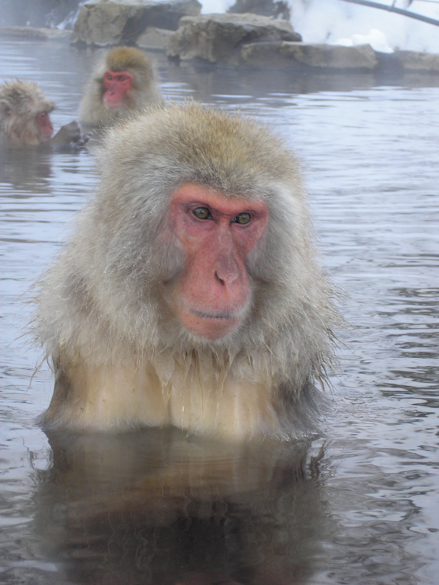
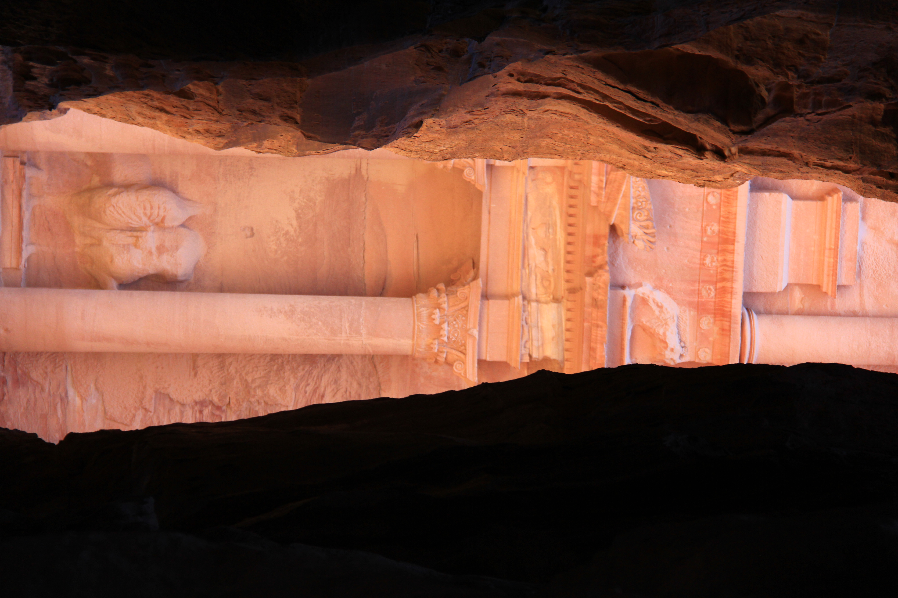
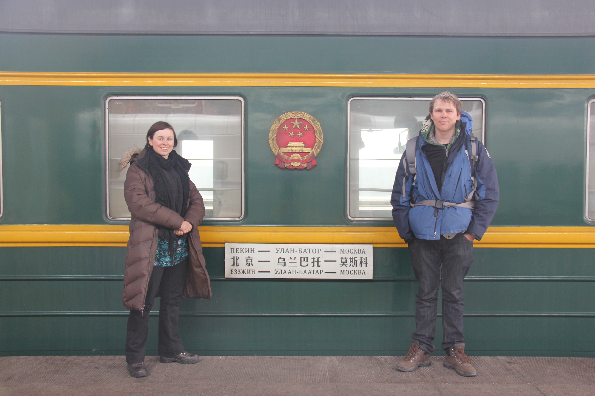
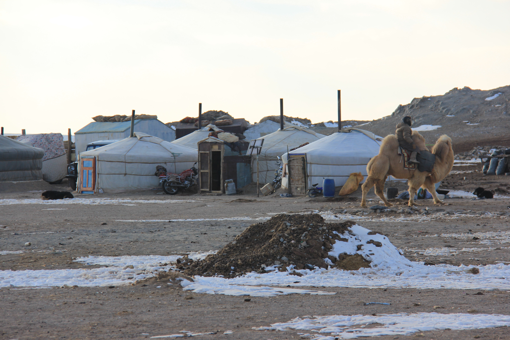

About Me
I recall vividly in early primary school sitting in Mrs Flanagan's class working with purple plastic blocks of unit squares we called "thousands, hundreds, tens and units". I remember the feeling of being fascinated by them and excited about how they were related and how they worked. I still feel that way about maths now.
My longest running hobby is travel. I love the freedom and sense of possibility that comes with being in a new place. It's what brought me to Australia. It's how I found myself watching the sun set over giant heads on the top of a snowy mountain in eastern Turkey, standing in awe as the full moon reflected on ice covered sand in the middle of the Gobi desert and bobbing in a tiny boat encircled by a huge pod of playful dolphins in the Solomon islands. Alongside travel, I also love skiing (not an easy pursuit when living in the sub-tropics). More accessible leisure pursuits include sewing, reading, watching films, random craft projects, and visiting op shops.



